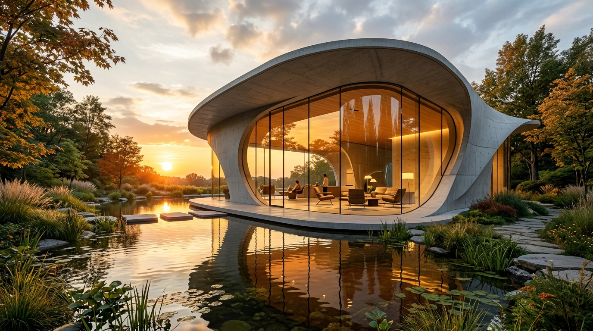

ArchitectureThe Glass Pavilion & Reflection Basin
An architectural study in curvilinear concrete harmony. Expansive panoramic curved glazing invites warm sunset amber tones into an open living sanctuary embraced by native flora and tranquil reflective pools.